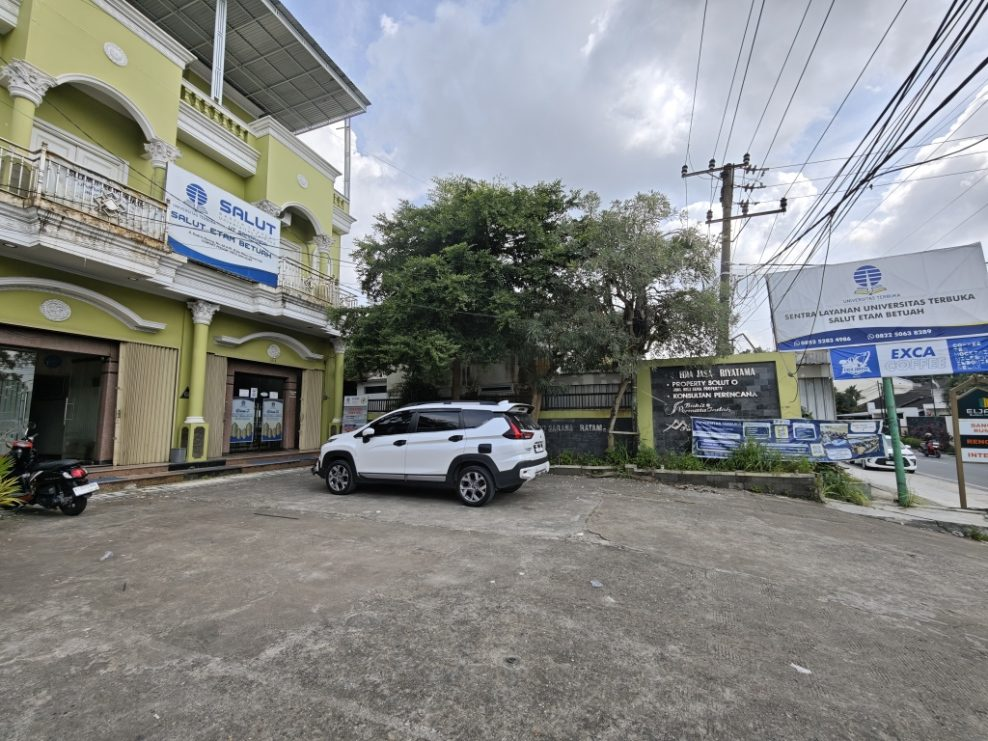
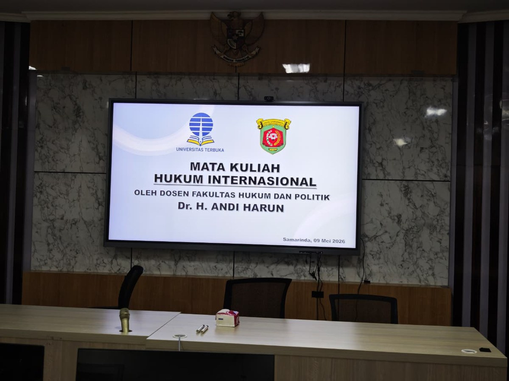

Apa itu SALUT Universitas Terbuka?
SALUT adalah singkatan dari Sentra Layanan Universitas Terbuka. SALUT merupakan kepanjangan tangan teknis operasional dari UT Daerah (UPBJJ) yang berfungsi sebagai tempat layanan administrasi akademik dan kegiatan akademik di tingkat kabupaten atau kota.


Dengan keberadaan SALUT, jarak akses mahasiswa dan pemangku kepentingan lainnya dengan kantor layanan UT semakin dekat. SALUT "tempat bayar SPP": SALUT adalah pusat layanan lengkap untuk seluruh perjalanan akademik mahasiswa UT, dari daftar hingga wisuda.
Fungsi dan Peran SALUT UT
SALUT memiliki beberapa fungsi utama yang penting bagi mahasiswa Universitas Terbuka:
- Pendaftaran Mahasiswa Baru — membantu calon mahasiswa mendaftar kuliah UT, baik jalur reguler (Non-RPL) maupun jalur RPL (alih kredit)
- Registrasi & Herregistrasi — membantu mahasiswa aktif melakukan registrasi mata kuliah setiap semester
- Tutorial Tatap Muka (TTM) — menyelenggarakan kuliah tatap muka untuk mata kuliah tertentu
- Pelayanan Ujian — menyediakan tempat dan fasilitas ujian UAS, UASKE, dan ujian susulan
- Layanan Dokumen Akademik — membantu pengurusan SKA, transkrip nilai, SKPI, dan legalisir
- Pendaftaran Wisuda — mendampingi mahasiswa dari persiapan hingga hari wisuda
- Konsultasi Akademik — memberikan bimbingan terkait perjalanan studi di UT
- Pengenalan UT — mengenalkan program UT kepada masyarakat dan merekrut calon mahasiswa
Perbedaan SALUT, POKJAR, dan UPBJJ
Seringkali mahasiswa bingung membedakan tiga istilah ini. Berikut penjelasannya:
| Aspek | SALUT | POKJAR | UPBJJ |
|---|---|---|---|
| Kepanjangan | Sentra Layanan UT | Kelompok Belajar | Unit Program Belajar Jarak Jauh |
| Tingkat | Kota/Kabupaten | Kecamatan/Instansi | Provinsi/Regional |
| Status | Mitra resmi UT | Kelompok informal | Kantor resmi UT |
| Layanan | Lengkap (admin + ujian) | Tutorial saja | Semua layanan pusat |
| Fasilitas | Lab komputer, ruang ujian | Ruang belajar | Kantor lengkap |
SALUT Terbaik di Samarinda: Salut Etam Betuah
Di Samarinda, Kalimantan Timur, terdapat beberapa SALUT yang beroperasi. Namun, Salut Etam Betuah telah membuktikan diri sebagai SALUT terbaik dengan rekam jejak yang tidak bisa disangkal:
Rating 5.0 Google
200+ ulasan bintang lima dari mahasiswa nyata
Audit BDO International
Satu-satunya SALUT di Kaltim yang lolos audit internasional
5000+ Mahasiswa
Terlayani sejak berdiri tahun 2018
Respons <5 Menit
WhatsApp aktif 24 jam, 7 hari seminggu
Mengapa memilih Salut Etam Betuah?
Ada banyak alasan mengapa ribuan mahasiswa UT dari Samarinda, Balikpapan, Kutai Kartanegara, Bontang, Berau, dan seluruh Kalimantan Timur memilih Salut Etam Betuah sebagai SALUT mereka:
- Fasilitas lengkap — lab komputer ber-AC, ruang konsultasi, ruang disabilitas, area rooftop, dan fasilitas cicil SPP via Bank BTN
- Layanan online — hampir semua urusan bisa diselesaikan via WhatsApp tanpa perlu datang ke kantor
- 5 mitra eksklusif — anggota mendapat diskon di Hotel Grand Kartika, Quest Hotel Balikpapan, Senyiur Hotels & Resorts, Bank BTN, dan TMS Daihatsu
- KTA digital — Kartu Tanda Anggota yang bisa didownload gratis dan langsung digunakan
- Program Salut Talks — talkshow eksklusif dengan narasumber inspiratif dari dunia pendidikan dan profesional
Cara Mendaftar di SALUT Etam Betuah
Mendaftar di Salut Etam Betuah sangat mudah. Ada dua jalur yang bisa dipilih:
Jalur Non-RPL (untuk SMA/SMK sederajat)
Cocok untuk fresh graduate atau siapapun yang belum pernah kuliah sebelumnya. Syarat utama adalah ijazah SMA/SMK/MA sederajat. Proses pendaftaran bisa dilakukan langsung di kantor atau via WhatsApp.
Jalur RPL — Rekognisi Pembelajaran Lampau
Jalur RPL (Alih Kredit) sangat cocok untuk ASN, TNI, Polri, dan profesional berpengalaman. Pengalaman kerja dan pendidikan sebelumnya diakui sebagai SKS sehingga waktu kuliah lebih singkat dan biaya lebih efisien.
Siap Bergabung di SALUT Samarinda Terbaik?
Hubungi Salut Etam Betuah sekarang: konsultasi gratis, respons <5 menit!
💬 Chat WhatsApp SekarangLokasi SALUT Etam Betuah Samarinda
Alamat: Jl. Kadrie Oening No. 66A, Air Hitam, Samarinda Ulu, Kota Samarinda, Kalimantan Timur 75124
Jam Operasional: Senin–Sabtu 08.30–17.00 WITA
WhatsApp: 0822-5063-8289 (Admin 1) · 0852-5283-4986 (Admin 2), Aktif 24 jam
Pertanyaan Umum tentang SALUT
Apakah SALUT Etam Betuah lembaga resmi?
Ya. Salut Etam Betuah adalah SALUT resmi yang beroperasi di bawah UPBJJ UT Samarinda dan telah lolos audit independen BDO International, firma audit multinasional terkemuka.
Apakah SALUT melayani mahasiswa dari luar Samarinda?
Ya! Salut Etam Betuah melayani mahasiswa dari seluruh Indonesia: Balikpapan, Kutai Kartanegara, Bontang, Berau, Penajam, dan daerah lainnya. Sebagian besar layanan bisa dilakukan via WhatsApp.
Berapa biaya keanggotaan SALUT Etam Betuah?
Keanggotaan Rp 500.000/semester sudah termasuk semua fasilitas plus akses ke 5 mitra eksklusif dengan diskon spesial.